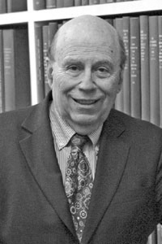

|  |
1976 год Michael O. Rabin (1931) и Dana S. Scott (1932) «За их общую статью под названием «Finite Automata and Their Decision Problem», предложившую идею недетерминированного автомата, доказавшего впоследствии свою исключительную ценность. Их статья послужила источником вдохновения для многих последующих работ в этой области» |
Страна: Michael O. Rabin - Израиль; Dana S. Scott - США
Образование: Michael Rabin - Доктор философии в области информатики, Принстонский университет, 1957
Dana Scott - Доктор философии в области математики, Принстонский университет, 1958
О лауреатах
В 1959 году Rabin участвовал в исследовательском семинаре для избранной группы молодых учёных по приглашению IBM. Здесь он и Dana Scott объединились для работы над их известной статьёй “Finite Automata and Their Decision Problem”. Эта статья представляла концепт недетерминированного автомата, в котором, в отличии от стандартной машины Тьюринга, могло быть несколько различных возможных «инструкций», которые могли выполняться на каждом шаге. В 1960 Rabin был приглашён на работу в Bell Labs, где представил вероятностный автомат, который использовал бросок монеты, чтобы решить, какое состояние принять. Он показал пример регулярных языков, которые требуют большое количество состояний, но в которых происходит экспоненциальное уменьшение состояний при переходе к вероятностным автоматам. Scott также известен за свои исследования в области семантики программных языков. В 1972 году он совместно с C. Strachey обеспечил математическую основу для данных исследований, которые стали основой для большого числа влиятельных работ в области теоретической информатики.
Ключевые слова: Nondeterministic finite automata, Automata theory, Semantics of programming languages, Randomized algorithms
Краткая библиография
| 1. |
Rabin, Michael O. and Dana Scott, “Finite Automata and Their Decision Problems,” IBM Journal of Research and Development, Vol. 3, Num. 2, 1959, pp. 114-125. Russian translation: “Konechnye avtomaty i zadachi ikh razresheniya,” Kiberneticheskii sbornik, vol. 4 (1962), pp. 58-91. Reprinted in: Moore E. F. (editor), Sequential Machines, Selected Papers, Addison Wesley Publishing Company, Reading, MA (1964), pp. 63-92. Статья, содержащая исследовательскую работу над недетерминированным автоматом. |
| 2. |
Scott, Dana S. and Christopher Strachey. Toward a mathematical semantics for computer languages, Oxford Programming Research Group Technical Monograph. PRG-6. 1971. |
| 3. |
Scott, Dana S., Outline of a mathematical theory of computation. Technical Monograph PRG-2, Oxford University Computing Laboratory, Oxford, England, November 1970. |